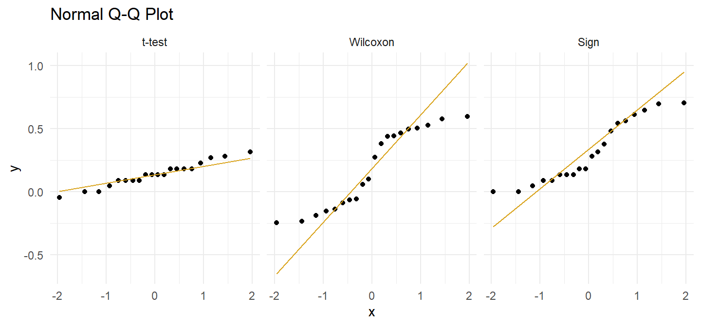
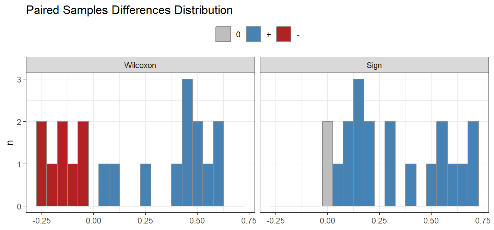

(drink$t_gt <- drink$t_dat %>%
gtsummary::tbl_summary(statistic = list(all_continuous() ~ "{mean} ({sd})"))
)Characteristic |
N = 20 1 |
|---|---|
| carb | 11.17 (0.73) |
| carb_protein | 11.30 (0.71) |
| diff | 0.14 (0.10) |
| 1
Mean (SD) |
|
There are two common study designs that employ a paired samples t-test to compare two related groups. One relates the groups as two time points for the same subjects. The second relates the groups as two tests of the same subjects, e.g. comparing reaction time under two lighting conditions.
The paired samples t-test uses the mean of sampled paired differences \(\bar{d}\) as an estimate of the mean of the population paired differences \(\delta\) to evaluate an hypothesized mean \(\delta_0\). Test \(H_0: \delta = \delta_0\) with test statistic \(T = \frac{\bar{d} - \delta_0}{se}\), or define a \((1 - \alpha)\%\) confidence interval as \(\delta = \bar{d} \pm t_{1 - \alpha / 2, n - 1} se\). The paired t-test is really just a one-sample mean t-test operating on variable that is defined as the difference between two variables.
The paired samples t test applies when the sampling distribution of the mean of the population paired differences is normally distributed and there are no significant outliers.
The Wilcoxon signed-rank test is a nonparametric alternative to the paired-samples t-test for cases in which the paired differences fails the normality condition, but is at least symmetrically distributed.
The test statistic is the sum product of the difference signs (-1, +1) and the rank of the difference absolute values, \(W = \sum_{i=1}^n sign (d_i) \cdot R_i\). The more differences that are of one sign, or of extreme magnitude, the larger \(W\) is likely to be, and the more likely to reject \(H_0\) of equality of medians.
The sign test is an alternative to the Wilcoxon signed-rank test for cases in which the paired differences fails the symmetrical distribution condition.
The test statistic is the count of pairs whose difference is positive, \(W = cnt(d_i > 0)\). \(W \sim b(n, 0.5)\), so the sign test is really just an exact binomial test (exact sign test), or for large n-size, the normal approximation to the binomial (sign test).
\(n\) = 20 athletes consume a carb-only or carb+protein drink prior to running as far as possible in 2 hours and a researcher records their distances under each condition. Do the distances differ from 0?
Laerd has three data sets for this example. One meets the conditions for a t-test. The second fails the normality condition, but is symmetric and meets the conditions for the Wilcoxon test. The third fails the symmetry condition and requires the sign test.
(drink$t_gt <- drink$t_dat %>%
gtsummary::tbl_summary(statistic = list(all_continuous() ~ "{mean} ({sd})"))
)Characteristic |
N = 20 1 |
|---|---|
| carb | 11.17 (0.73) |
| carb_protein | 11.30 (0.71) |
| diff | 0.14 (0.10) |
| 1
Mean (SD) |
|
There were 20 participants. Data are mean \(\pm\) standard deviation, unless otherwise stated. Participants ran further after consuming the carbohydrate-protein drink, 11.30 (0.71) km, than the carbohydrate-only drink, 11.17 (0.73) km.
Once you learn you need Wilcoxon or the sign-test, show the median and IQR summary statistics instead.
(drink$wilcoxon_gt <- drink$wilcoxon_dat %>%
gtsummary::tbl_summary()
)Characteristic |
N = 20 1 |
|---|---|
| carb | 11.28 (10.38, 11.77) |
| carb_protein | 11.37 (10.87, 11.84) |
| diff | 0.19 (-0.11, 0.48) |
| 1
Median (Q1, Q3) |
|
There were 20 participants. Data are medians and IQR unless otherwise stated. Participants ran further after consuming the carbohydrate-protein drink, 11.37 (10.87, 11.84) km, than the carbohydrate-only drink, 11.28 (10.38, 11.77) km.
(drink$sign_gt <- drink$sign_dat %>%
gtsummary::tbl_summary()
)Characteristic |
N = 20 1 |
|---|---|
| carb | 11.11 (10.41, 11.54) |
| carb_protein | 11.37 (10.87, 11.84) |
| diff | 0.23 (0.11, 0.55) |
| 1
Median (Q1, Q3) |
|
There were 20 participants. Data are median and IQR unless otherwise stated. Participants ran further after consuming the carbohydrate-protein drink, 11.37 (10.87, 11.84) km, than the carbohydrate-only drink, 11.11 (10.41, 11.54) km.
The paired samples t test applies when the variable is continuous and partitioned into dependent pairs, Additionally, there are two conditions related to the data distribution. If either condition fails, consider the suggested work-around or move to the nonparametric alternatives.
Assess outliers with a box plot. Box plot whiskers extend up to 1.5*IQR from the upper and lower hinges and outliers (beyond the whiskers) are are plotted individually.

There were no outliers in the data, as assessed by inspection of a boxplot.
Had there been outliers, you might report
X outliers were detected. Inspection of their values did not reveal them to be extreme and they were kept in the analysis.
If the outliers are data entry errors or measurement errors, fix them or discard them. If the outliers are genuine, you can try leaving them in or transforming the data.
Assume the population is normally distributed if n \(\ge\) 30. These data sets have n = 20 observations, so you cannot assume normality. Asses a Q-Q plot, skewness and kurtosis values, histogram, or Shapiro-Wilk test.

For the t-test data set,
(drink$t_shapiro <- shapiro.test(drink$t_dat$diff))
Shapiro-Wilk normality test
data: drink$t_dat$diff
W = 0.97119, p-value = 0.7797The differences between the distance ran in the carbohydrate-only and carbohydrate-protein trial were normally distributed, as assessed by Shapiro-Wilk’s test (p = 0.780).
For the Wilcoxon data set,
(drink$wilcoxon_shapiro <- shapiro.test(drink$wilcoxon_dat$diff))
Shapiro-Wilk normality test
data: drink$wilcoxon_dat$diff
W = 0.87077, p-value = 0.01212The differences between the distance ran in the carbohydrate-only and carbohydrate-protein trial were not normally distributed, as assessed by Shapiro-Wilk’s test (p = 0.012).
For the sign-test data set,
(drink$sign_shapiro <- shapiro.test(drink$sign_dat$diff))
Shapiro-Wilk normality test
data: drink$sign_dat$diff
W = 0.8968, p-value = 0.03593The differences between the distance ran in the carbohydrate-only and carbohydrate-protein trial were not normally distributed, as assessed by Shapiro-Wilk’s test (p = 0.036).
If the data is normally distributed, use the t-test. If not, you try transforming the dependent variable, or carrying on regardless since the t-test is fairly robust to deviations from normality.
If the data passed the outliers test, but failed the normality test, as the Wilcoxon and sign test data sets above did, you will use the Wilcoxon signed-rank test or sign test. Now you need to test the distribution to determine which test. If the distribution is symmetric, use Wilcoxon; otherwise use the sign test.

For the Wilcoxon data set,
The distribution of the differences between the carbohydrate-protein drink and the carbohydrate-only was symmetric, as assessed by visual inspection.
For the sign data set,
The distribution of the differences between the carbohydrate-protein drink and the carbohydrate-only was not asymmetric, as assessed by visual inspection.
(drink$t_t <- t.test(x = drink$t_dat$carb_protein, y = drink$t_dat$carb, paired = TRUE)
)
Paired t-test
data: drink$t_dat$carb_protein and drink$t_dat$carb
t = 6.3524, df = 19, p-value = 4.283e-06
alternative hypothesis: true mean difference is not equal to 0
95 percent confidence interval:
0.09085492 0.18014508
sample estimates:
mean difference
0.1355 The carbohydrate-protein drink elicited an increase of 0.135 (95% CI, 0.091 to 0.180) km in the distance run in two hours compared to a carbohydrate-only drink.
The effect size, called Cohen’s d, is the number of standard deviations the measured mean difference is from the hypothesized difference, \((\bar{d}-d_0) / s\), where \(s\) is the sample standard deviation. .2 is small, .5 is medium, and .8 is large. This one is large.
(drink$t_d <- effectsize::cohens_d(drink$t_dat$diff))Cohen's d | 95% CI
------------------------
1.42 | [0.78, 2.04]You are about to reject the null hypothesis. Construct a plot as a sanity check on your reasoning.
Report the results.
A paired-samples t-test was used to determine the effect of a new formula of sports drink on running performance. Instead of the regular, carbohydrate-only drink, the new sports drink contains a new carbohydrate-protein mixture. Twenty participants were recruited to the study who each performed two trials in which they had to run as far as possible in two hours on a treadmill. In one of the trials they drank the carbohydrate-only drink and in the other trial they drank the carbohydrate-protein drink. The order of the trials was counterbalanced and the distance they ran in both trials was recorded.
Two outliers were detected that were more than 1.5 box-lengths from the edge of the box in a boxplot. Inspection of their values did not reveal them to be extreme and they were kept in the analysis. The assumption of normality was not violated, as assessed by Shapiro-Wilk’s test (p = 0.780).
Data are mean \(\pm\) standard deviation, unless otherwise stated. Participants ran further after consuming the carbohydrate-protein drink, 11.30 (0.71) km, than the carbohydrate-only drink, 11.17 (0.73) km, a statistically significant increase of 0.135 (95% CI, 0.091 to 0.180) km, t(19) = 6.352, p = 0.0000, d = 1.42.
From the distribution plot, you can see that most of the signs were positive, and the largest absolute difference values were among the positives, so expect a pretty large test statistic.
(drink$wilcoxon_test <- wilcox.test(drink$wilcoxon_dat$carb_protein,
drink$wilcoxon_dat$carb,
paired = TRUE))
Wilcoxon signed rank exact test
data: drink$wilcoxon_dat$carb_protein and drink$wilcoxon_dat$carb
V = 162, p-value = 0.03277
alternative hypothesis: true location shift is not equal to 0The carbohydrate-protein drink elicited a statistically significant median increase in distance run in two hours compared to the carbohydrate-only drink, W = 162, p = 0.033.
Report the results.
A Wilcoxon signed-rank test was conducted to determine the effect of a new formula of sports drink on running performance. Instead of the regular, carbohydrate-only drink, the new sports drink contains a new carbohydrate-protein mixture. Twenty participants were recruited to the study who each performed two trials in which they had to run as far as possible in two hours on a treadmill. In one of the trials they drank the carbohydrate-only drink and in the other trial they drank the carbohydrate-protein drink. The order of the trials was counterbalanced and the distance they ran in both trials was recorded.
The difference scores were approximately symmetrically distributed, as assessed by a histogram with superimposed normal curve.
Data are medians unless otherwise stated. Of the 20 participants recruited to the study, the carbohydrate-protein drink elicited an increase in the distance run in 17 participants compared to the carbohydrate-only drink, whereas two participants saw no improvement and one participant did not run as far with the carbohydrate-protein drink. There was a statistically significant median increase in distance run (0.2300 km) when subjects imbibed the carbohydrate-protein drink (11.368 km) compared to the carbohydrate-only drink (11.108 km), W = 162, p = 0.0328.
Conduct the exact sign test since the n-size is not so large that we need the normal approximation to the binomial. Notice n is the count of non-zero differences.
(drink$sign_test <- binom.test(sum(drink$sign_dat$diff > 0),
n = sum(drink$sign_dat$diff != 0)))
Exact binomial test
data: sum(drink$sign_dat$diff > 0) and sum(drink$sign_dat$diff != 0)
number of successes = 18, number of trials = 18, p-value = 7.629e-06
alternative hypothesis: true probability of success is not equal to 0.5
95 percent confidence interval:
0.814698 1.000000
sample estimates:
probability of success
1 The carbohydrate-protein drink elicited a statistically significant median increase in distance run (0.230 km) compared to the carbohydrate-only drink, p = 0.000.
Report the results.
An exact sign test was conducted to determine the effect of a new formula of sports drink on running performance. Instead of the regular, carbohydrate-only drink, the new sports drink contains a new carbohydrate-protein mixture. Twenty participants were recruited to the study who each performed two trials in which they had to run as far as possible in two hours on a treadmill. In one of the trials they drank the carbohydrate-only drink and in the other trial they drank the carbohydrate-protein drink. The order of the trials was counterbalanced and the distance they ran in both trials was recorded.
An exact sign test was used to determine whether there was a statistically significant median difference between the distance ran when participants drank a carbohydrate-protein drink compared to a carbohydrate-only drink. Data are medians unless otherwise stated. Of the 20 participants recruited to the study, the carbohydrate-protein drink elicited an increase in the distance run in 18 participants compared to the carbohydrate-only drink, whereas 0 participants did not run as far and 2 participant saw no improvement with the carbohydrate-protein drink. There was a statistically significant median increase in distance run (0.2300 km) when subjects imbibed the carbohydrate-protein drink (11.368 km) compared to the carbohydrate-only drink (11.108 km), p = 0.0000.